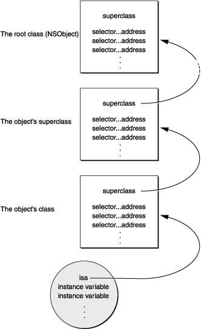

Runtime (一)
Message
这篇文章描述了消息如何通过使用objc_msgSend发送，如何通过方法名称找到对应方法的reference
The objc_msgSend Function
在Object-C中，发送的消息直到运行时才绑定到正真的方式实现。
[receiver message]
objc_msgSend是真正调用消息的函数，这个函数持有消息的接受者和方法的名称：
objc_msgSend(receiver,selector)
任何其他的参数也是通过这个方法传入：
objc_msgSend(receiver,selector,arg1,arg2,...)
这个方法会做一些必要的事情来进行动态绑定：
- 首先找到方法的实现即selector的引用。因为在不同的类中都可以实现相同方法名的方法，所以通过方法的实现找到真正的receiver的class。
- 然后传入该方法指定的receiver和参数。
- 最后将实现的返回值作为它自己的返回值。
Note:编译器生成调用消息的方法，在日常开发中永远不要在你写的代码中直接调用。 在架构中消息传递的关键在于编译器编译每个class和object。每个class的结构中包含两个重要元素：
- 指向父类的指针
- 一个类的派发表 ，这个表记录了方法的selector和定义该方法的地址。
setOrigin::方法和其对应的地址；display和其对应的地址。
当一个新的对象被创建，内存被分配，实例变量被初始化。第一件事就是对象变量指针指向它的类结构。这个指针一般被称作isa,给予对象访问类的权利。所有的类都是从这个类继承而来。
Note:尽管这是oc不太严谨的一部分(容易被hook)，但是这也是oc对象在运行时不可缺少的一部分。一个对象需要一个和它等效的结构体来代表，在任何地方都可以用它来定义。如果你曾经需要创建一个根对象。这个对象自动继承
NSObject或者NSProxy都会携带一个isa变量。
类的这些元素和对象结构如下：

当消息被发送到一个对象，消息方法跟随对象的isa指向类结构，在派发表中一直向上寻找对应的方法。如果你不能在这里找到你需要的方法，objc_msgSend方法会继续向上在父类的派发表里面尝试寻找该方法。还是失败就会一直寻找直到到达NSObject类，一旦找到selector，就会从表中的入口调用该方法，把它传递到对象的数据结构中。
这种方式的方法调用是在运行时进行的。在面向对象编程的专业术语中，我们称它为—动态消息绑定
为了加速消息处理的过程，运行时系统会缓存曾经使用过的selectors和对应的方法地址。每个类是被分开缓存的。和在类中定义的方法一样，它也包含继承方法的selector。在查找派发表之前，消息路径会第一个会检查接受者类的缓存.如果方法的selector在缓存中，消息只比方法调用慢一点点。一旦程序运行了足够长的时间唤醒缓存，几乎发送的所有消息都能在缓存中找到。在程序运行的时候，缓存动态的增加来容纳新的方法。
Using Hidden Arguments
当objc_msgSend寻找实现方法的过程，它调用方法并传递所有的参数。同时它也为这个程序传递了两个隐藏的参数：
- 接受者对象
- 方法的selector
这些参数给予每个方法的实现明确的信息。因为这两个参数的隐藏不能表现在编码中，一般是在编译的时候被插入到具体的实现。
尽管这些参数没有被明确的声明，源码仍然可以引用到它们(就像可以引用对象的实例变量)。方法通过self引用接受者对象，通过_cmd代表selector。在下面的例子中，_cmd指向strange方法的selector，这个对象的self接受strange消息。
- strange
{
id target = getTheReceiver();
SEL method = getTheMethod();
if(target == self || method == _cmd)
return nil;
return [target performSelector:method];
}
Getting a Method Address
避免动态绑定的唯一办法，就是拿到方法的地址直接调用，就像调用一个方法一样。这只适合在一些少有情况下：当一个具体的方法需要被多次成功的执行，你想要在每次方法执行的时候避免消息带来的开销。
定义在NSObject类中的方法methodForSelector:你可以获得一个指向方法具体实现的指针，然后使用指针调用程序。methodForSelector:方法返回的指针一定要小心的包裹来指向一个适当的函数类型。返回值和输入参数都需要包含在里面。
下面的例子展示了setFilled:方法调用的实现过程：
void (*setter)(id,SEL,BOOL);
int i;
setter = (void (*)(id,SEL,BOOL))[target methodForSelector:@selector(setFilled:)];
for(i = 0;i < 100;i++){
setter(targetList[i],@selector(setFilled:),YES);
}
首先self和_cmd被传递到具体的实现，在两个参数在方法中通过语法的方式被隐藏，但是当这些参数在被作为一个funcation被调用的时候必须要明确。
使用methodForSelector:来避免动态绑定可以节省大部分时间。但是如果同一个消息被多次调用，动态绑定的缓存机制可能更优雅点，因为上面的for循环会遍历所有tartet。
记住，methodForSelector:是Cocoa的运行时系统提供的，它不是OC语言自己的特性。